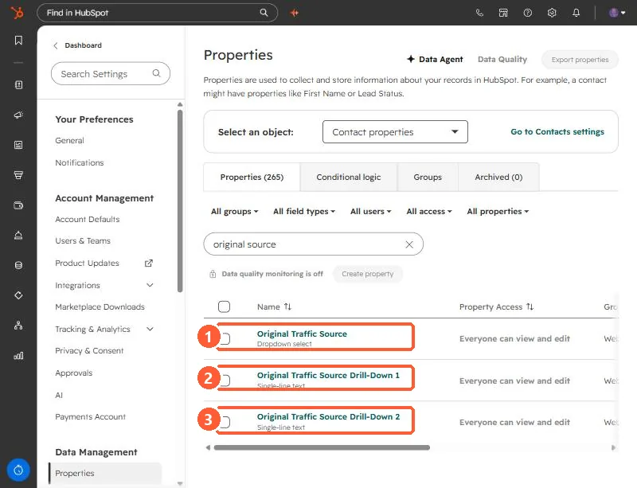
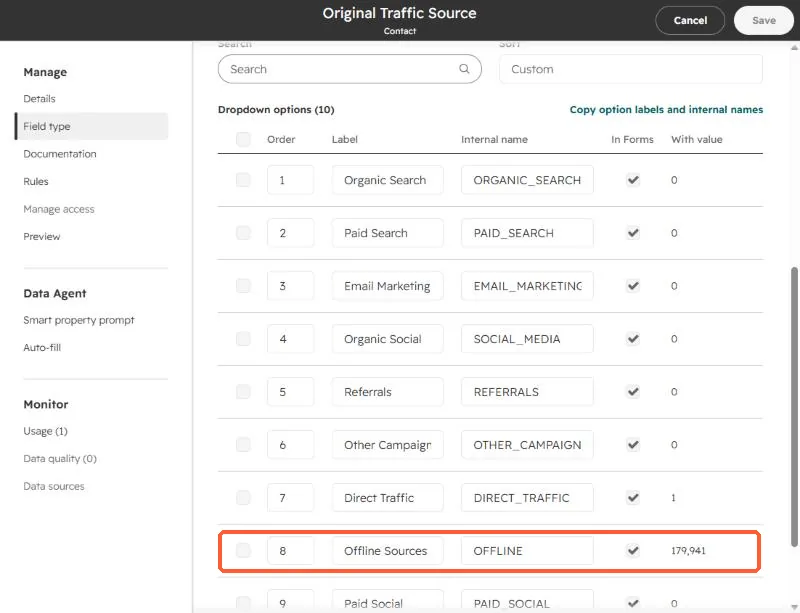
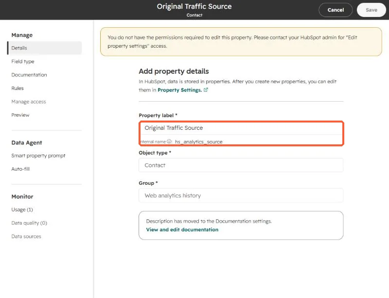

Short answer
Offline Sources is HubSpot's original source value for a record that did not arrive through tracked web traffic: an import, the API, a connected app, a sales or CRM entry. The two drill-down properties hold the detail. Drill-Down 1 names the creation channel (for example import, API, or CRM UI) and Drill-Down 2 gives the specific app or method. In my own portal this split showed that old records were mostly imports, while newer ones came from connectors and automatic enrichment.
1. What the property is called
Older articles call it Original source. In the property settings it is labeled Original Traffic Source, with Original Traffic Source Drill-Down 1 and Drill-Down 2 beside it. Open Contact properties and search "original source" to see all three.


2. See the values
Open the property to see its dropdown options and how many records hold each. In this demo portal almost every contact, about 180,000 of them, is Offline Sources, because they were loaded by import and sample data and not visits to a website. You can read the internal names here, such as OFFLINE.


HubSpot sets this property automatically when a record is created. It does not change later, and this login cannot edit it. That is the point: it records how the record arrived.


3. Break the bucket apart
In Contacts, filter Original Traffic Source to Offline Sources and add the two drill-down columns. Drill-Down 1 is the channel that created the record, with values such as import, API, sales tools, or a connected app. Drill-Down 2 is the specific method or app. Count rows per value and you know whether you have an import problem, an integration problem, or people creating records by hand.
I did this for my own portal. Older records were mostly imports. Newer ones were mostly my AI connector and automatic creation from email and meeting activity. The revenue that looked like Offline came from hand-entered records and records created by meeting enrichment, not from list imports.
4. What to do with the answer
- Mostly imports: add your own source property on import so you can tell lists apart.
- Mostly integrations: check whether the app can set a source, or add a workflow that stamps one.
- Hand-entered: that is real sales-sourced pipeline. Report it as its own channel instead of Offline.